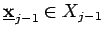
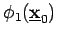
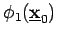

Bestimmung der optimalen Politik
- Variante 1:
- Mit der Auswertung der Funktionalgleichungen wird für jedes  die ermittelte Minimalstelle
 abgespeichert. Nach der Berechnung von  ist eine optimale Politik einfach dadurch zu erhalten, daß zunächst aus dem für gespeicherten der Folgezustand errechnet wird. Die für diesen Zustand gespeicherte Entscheidung liefert usw.
abgespeichert. Nach der Berechnung von  ist eine optimale Politik einfach dadurch zu erhalten, daß zunächst aus dem für gespeicherten der Folgezustand errechnet wird. Die für diesen Zustand gespeicherte Entscheidung liefert usw.
- Variante 2:
- Zu jedem wird lediglich der Wert
 gespeichert. Nachdem alle
gespeichert. Nachdem alle  bekannt sind, schließt sich eine Vorwärtsrechnung an. Beginnend mit j=1 und wird für wachsendes j durch Auswertung der Funktionalgleichung
bekannt sind, schließt sich eine Vorwärtsrechnung an. Beginnend mit j=1 und wird für wachsendes j durch Auswertung der Funktionalgleichung
bestimmt. Daraus ergibt sich jeweils  . In der Vorwärtsrechnung ist somit auf jeder Stufe nochmals ein Optimierungsproblem zu lösen.
. In der Vorwärtsrechnung ist somit auf jeder Stufe nochmals ein Optimierungsproblem zu lösen.
- Vergleich beider Varianten:
- Bei Variante 1 ist der Rechenaufwand etwas geringer, da die bei der Variante 2 erforderliche Vorwärtsrechnung entfällt. Dagegen muß für jeden Zustand
 eine Entscheidung abgespeichert werden, was für höherdimensionale Entscheidungsräume zu einem wesentlich höheren Speicherplatzbedarf, verglichen mit Variante 2, führt, bei welcher nur die Größen zu speichern sind. Für die Computerlösung wird deshalb in vielen Fällen Variante 2 vorzuziehen sein.
eine Entscheidung abgespeichert werden, was für höherdimensionale Entscheidungsräume zu einem wesentlich höheren Speicherplatzbedarf, verglichen mit Variante 2, führt, bei welcher nur die Größen zu speichern sind. Für die Computerlösung wird deshalb in vielen Fällen Variante 2 vorzuziehen sein.